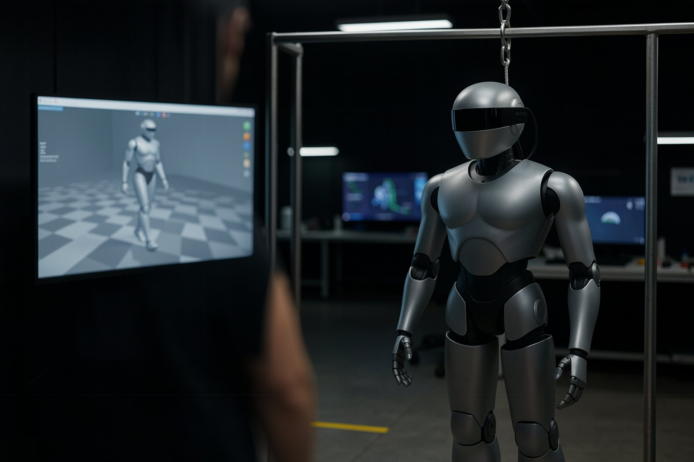
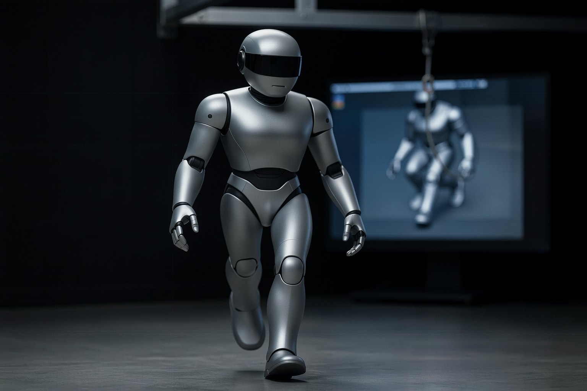
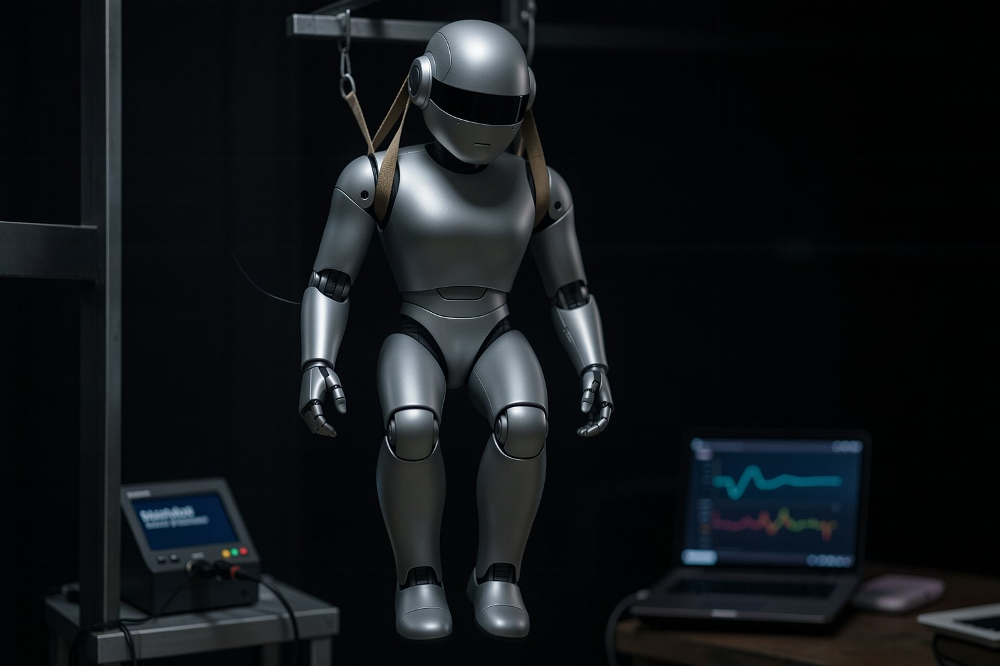
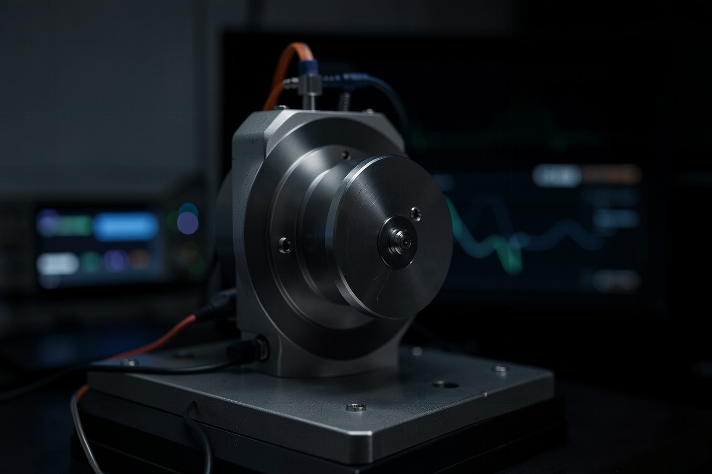
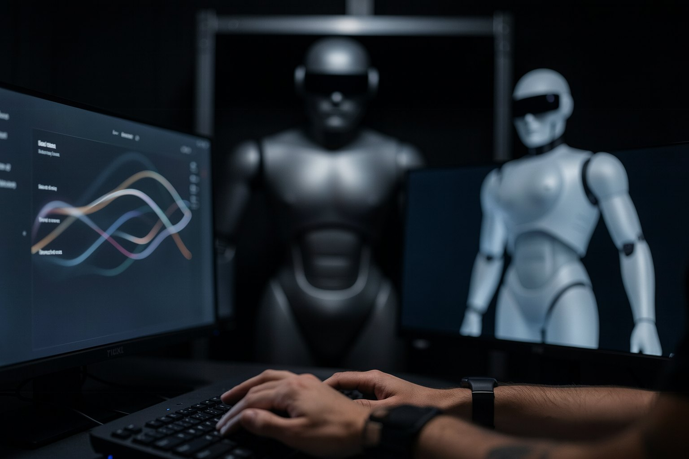
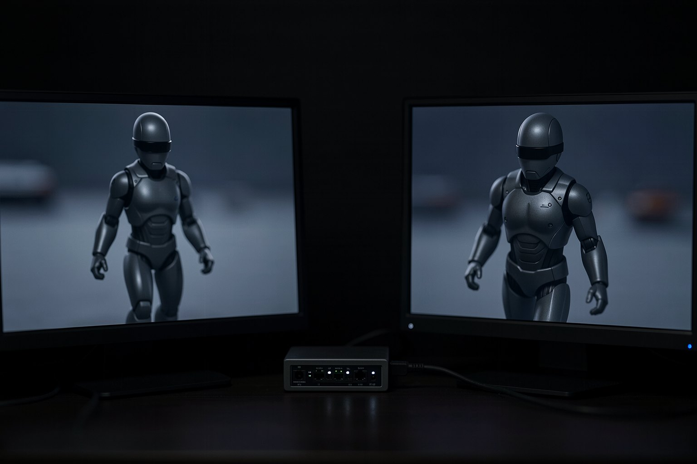
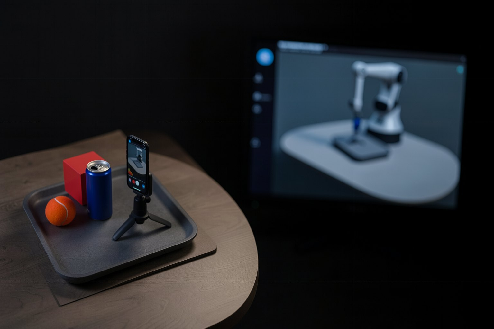
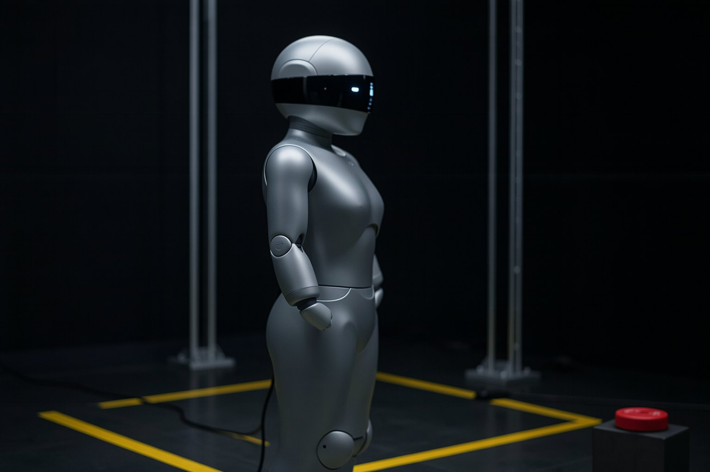

FTH — Formação Tecnológica em Humanoides · curso 2 de 5 · 8 aulas
Do simulador ao chão: sim-to-real em humanoides
Uma política de marcha que anda no simulador e cai no robô. Em oito aulas você mede esse gap, testa a randomização, identifica o atuador, mede o atraso, corrige o simulador com dados, passa a política por um portão sim2sim com DDS e monta a escada até o chão. Tudo em CPU, sem robô.

- 8aulas
- 125minutos de aula
- 24exercícios com "pronto quando"
- 3etapas no portão sim2sim (com DDS)
As aulas
Do gap medido à escada de implantação: randomização, identificação de sistema, atraso do atuador, correção com dados, sim2sim, real-to-sim e o plano até o chão.

Aula 1 · 16 minOnde o simulador mente num humanoideUma política que anda no simulador e cai no robô: é o problema do curso. Nesta aula você monta a bancada, roda a política de marcha pronta do Unitree G1 no "sim" e num "real simulado" com parâmetros escondidos, e descobre que nenhuma diferença sozinha a derruba; a soma delas, sim.- Aula 2 · 16 minDomain randomization: treinar para o mundo variadoSe o simulador nunca acerta o mundo, treina-se a política em muitos mundos sorteados. Nesta aula você lê as faixas que a própria Unitree randomizou no treino da política, sorteia 20 mundos dentro delas e 20 fora, e mede a diferença. A política aguenta o que viu no treino e falha logo depois.

Aula 3 · 17 minIdentificação de sistema: medir para modelarRandomizar cobre o que você não sabe; identificar diminui o que você não sabe. Nesta aula você pendura o "robô real" no pórtico, faz a perna balançar numa varredura de frequência, grava os encoders e usa o toolbox de identificação de sistema do próprio MuJoCo para descobrir o kp e o kd que o motor entrega de verdade.
Aula 4 · 16 minO atuador de verdade: atraso, limite de torque e actuator networkEntre a política decidir e o motor girar há rede, laço do controlador e PD do motor. Nesta aula você mede o atraso do "robô real" com um degrau no joelho, conta as quedas que 20 e 40 ms causam sob empurrão e compensa o kp identificado na aula 3.
Aula 5 · 15 minCorrigir com dados do robô: delta action e afinsÀs vezes o gap não cabe em dois parâmetros. A ideia do ASAP (RSS 2025) é aprender a ação que falta: um modelo que, somado ao comando dentro do simulador, faz ele repetir o que o robô real fez. Nesta aula você ajusta uma versão mínima dessa ideia com o log da bancada e mede o erro do simulador antes e depois.
Aula 6 · 18 minSim2sim como portão antes do robôAntes de qualquer robô, a política tem de passar num segundo simulador e no mesmo caminho de mensagens que o robô usa. É o fluxo oficial do unitree_rl_lab: treinar no Isaac Lab, validar no unitree_mujoco, só então o G1. Nesta aula você monta esse portão em três etapas, com DDS de verdade, e vê o erro que mais derruba políticas nessa travessia.
Aula 7 · 14 minReal-to-sim: trazer o mundo real para o simuladorAté aqui o caminho foi do simulador para o robô. O caminho inverso também existe: fotografar o lugar real e montar um gêmeo onde o robô treina e é testado antes. Nesta aula você roda o gêmeo do projeto robotica-real2sim (braço, não humanoide) no venv do curso e prova um plano na física, e vê onde isso está para humanoides em 2026.
Aula 8 · 13 minA escada de implantação: sim → sim2sim → suspenso → chãoTudo deste curso vira um plano: quatro degraus, cada um com o que roda, o critério para subir e o motivo para parar e voltar. Nesta aula você escreve a sua escada num arquivo YAML, confere com um script e simula a fila de degraus com uma falha no meio. O procedimento de segurança com o robô ligado é do curso 4.
Para quem é
- 1Quem programa em Python, já viu ROS 2 (ou fez o curso robot) e quer levar uma política de humanoide para o robô.
- 2Quem não tem humanoide: o "robô real" das práticas é um MuJoCo com parâmetros escondidos, dito como tal.
- 3Quem fez o curso 0 (bancada ~/fth) e o curso 1 (locomoção por RL), ou quer começar por uma política pronta.
O que você sai fazendo
- 1Medir o gap de uma política pronta e achar quais parâmetros o derrubam.
- 2Ler as faixas de randomização de um treino real e testar dentro e fora delas.
- 3Identificar o kp do atuador com o toolbox mujoco.sysid e medir o atraso na bancada.
- 4Passar a política por um portão sim2sim com outro modelo e DDS, e escrever a escada até o chão.